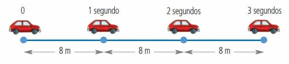
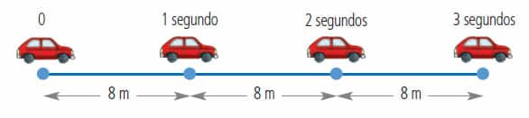

Movimiento Rectilíneo Uniforme
¿Qué es MRU?
El Movimiento Rectilíneo Uniforme (MRU) es un concepto fundamental en la física que describe el movimiento de un objeto que se desplaza en línea recta a una velocidad constante. Lo que implica que no hay aceleración. Este concepto es fundamental en la cinemática y se caracteriza por las siguientes propiedades:
- Trayectoria recta: El movimiento se realiza sobre una línea recta.
- Velocidad constante: La magnitud y dirección de la velocidad permanecen inalteradas a lo largo del tiempo, lo que significa que el objeto recorre distancias iguales en intervalos de tiempo iguales.
- Aceleración nula:

La relación entre distancia (d), velocidad (v) y tiempo (t) en un MRU se expresa mediante la fórmula:
Esto significa que para calcular la distancia recorrida, se multiplica la velocidad constante por el tiempo transcurrido. De igual manera, si se conoce la distancia y la velocidad, se puede determinar el tiempo usando:
La velocidad es una magnitud vectorial que indica el cambio de posición de un objeto en un intervalo de tiempo determinado. La fórmula básica para calcular la velocidad (v) es:
Este es un resumen de las formulas y como se ilustrativa un vehiculo en MRU
 

Este tipo de movimiento es común en situaciones ideales donde no actúan fuerzas externas significativas, permitiendo que un objeto mantenga su velocidad constante
- Velocidad: Es la rapidez constante del objeto en movimiento. Se expresa en unidades como metros por segundo (m/s) o kilómetros por hora (km/h).
- Distancia (d): Es la longitud total recorrida por el objeto durante el movimiento. Se mide en metros (m) o kilómetros (km).
- Tiempo (t): Es el intervalo durante el cual ocurre el movimiento. Se puede medir en segundos (s), minutos (min) o horas (h).